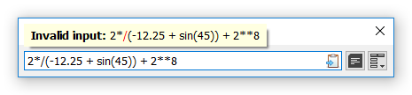

During calculations various errors may occur. In most cases, when syntax error, math domain error or specific argument type error occurs, user is notified by notification balloon like in example below (see another example of an error in Functions topic).

Syntax error notification.
In case of unexpected error, an "error.log" file will be created in program's directory. It will be much appreciated if you send that file to developer (see About SUM or About in Menu).